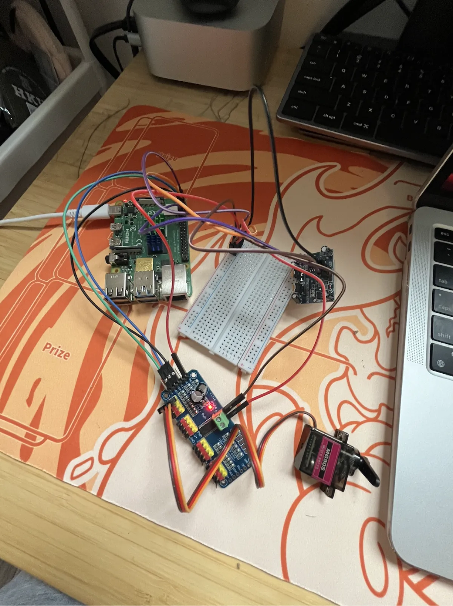
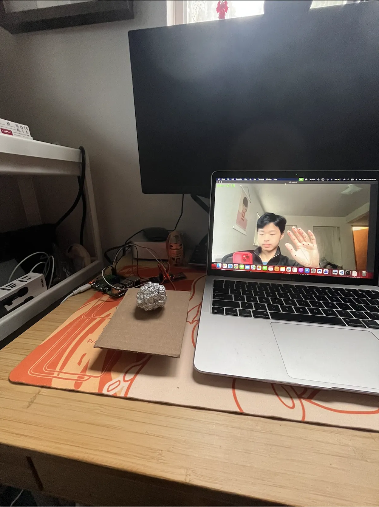
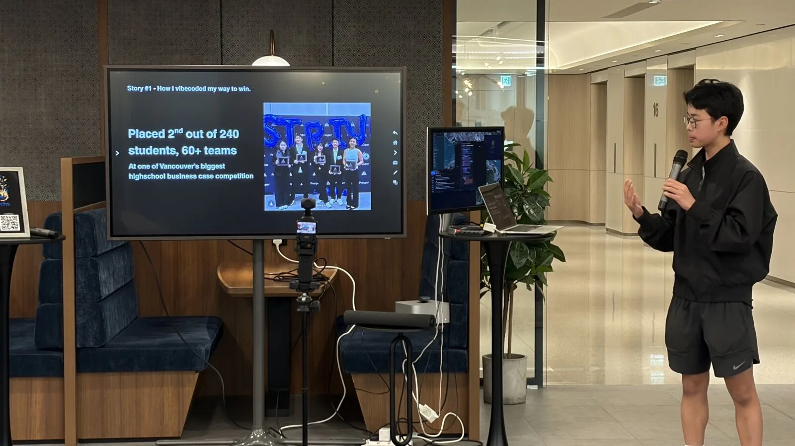
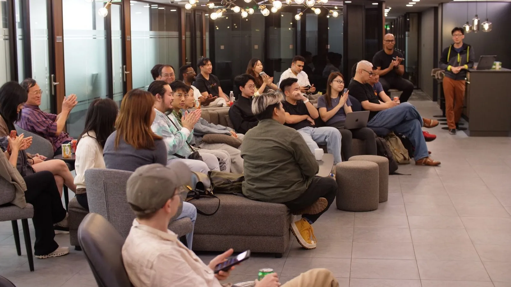
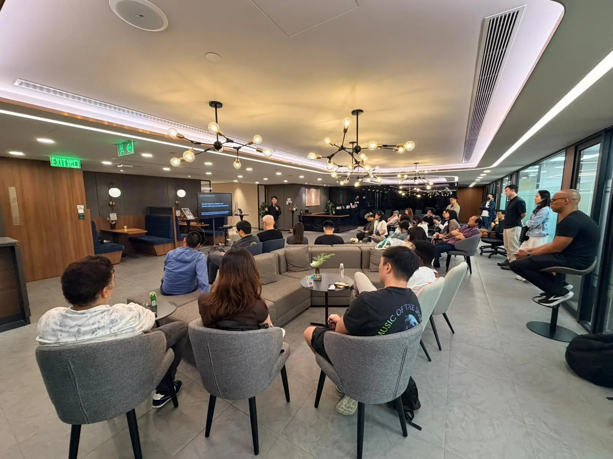
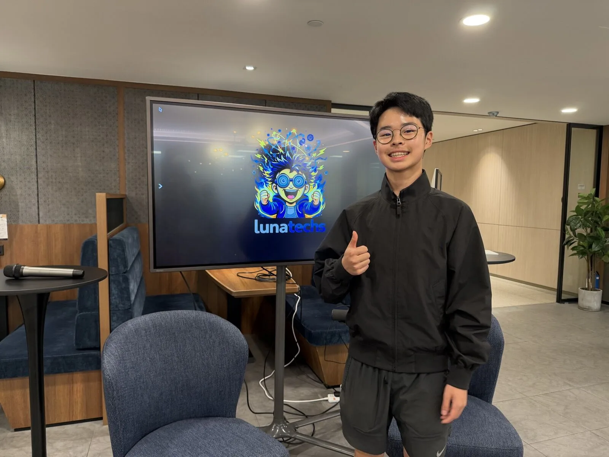
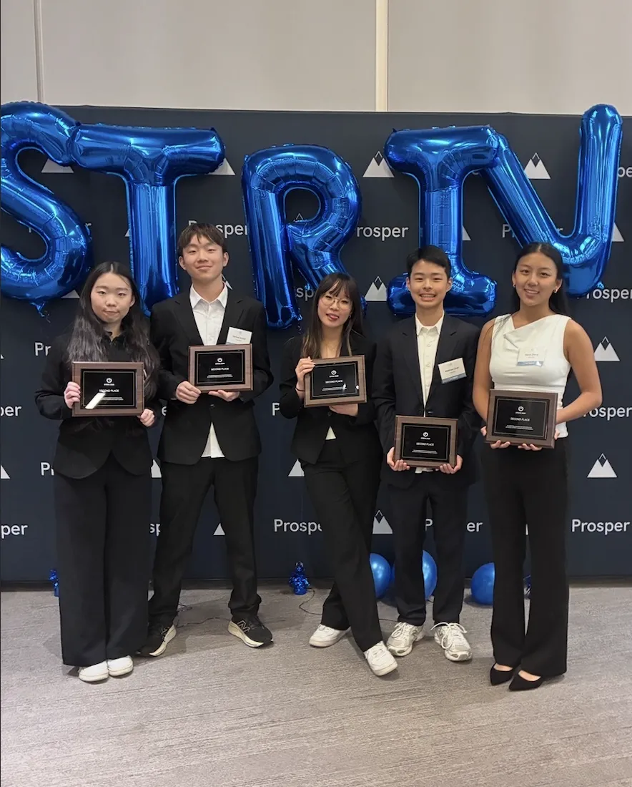
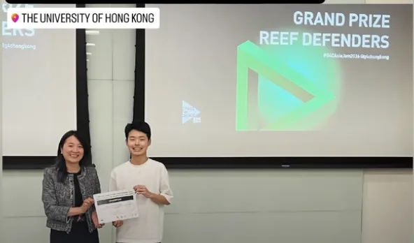
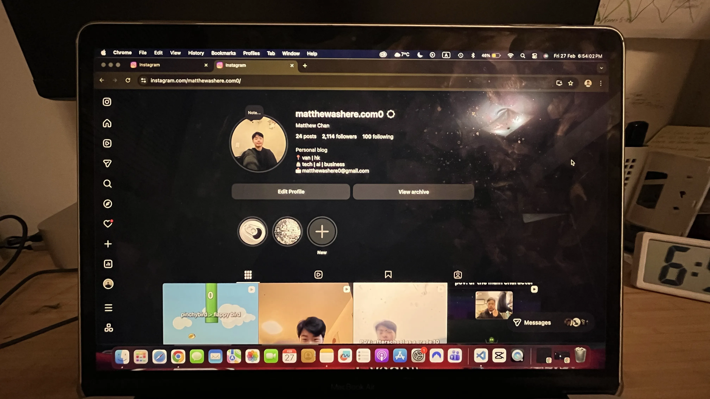

Shipped projects that taught me something. From zero to iterated on.
Other Projects
First time making software reach into the world. Servos, sensors, solder.


Sharing what I've learned out loud. On stage, not just online.




Proof I can ship under pressure. Jams, cases, reach.



What I thought about afterwards. Post-mortems and frameworks.
Why I killed Kairo
Apr 2026
A post-mortem on shutting down Kairo, the four questions I now run every new idea through, and why being a GPT wrapper isn't a business.
Read
So I killed Kairo. For context, Kairo was this AI thing I built to help high school students organize their extracurriculars. Clubs, competitions, deadlines, all in one place. Sounds useful, right? That's what I thought too. Then I actually watched the numbers come in. Like 600 visits, 70% bounce rate, 80 signups. And even the people who signed up, they'd only open it maybe once or twice a month. Because realistically, how often do you actually update your extracurriculars? Not daily, not weekly. Once a month, max. That's not a product. That's a tool you forget about between uses.
But honestly, the numbers weren't even the main reason. The real thing was when I sat down and asked myself this. What can Kairo do that Claude can't already do? And the answer was basically nothing. I was literally just building a GPT wrapper. A UI on top of something Anthropic or OpenAI is gonna ship for free in six months. That's not sustainable, that's not innovative, and I just don't wanna build that.
So I shut it down. Now before I start anything new I run four questions through my head. Will people come back? Does it get better as AI gets better? Can Claude already do this? And is this a real problem or just fun to ship? Misses any of them, I don't touch it.
Working on something interesting? Let's talk.
Email me